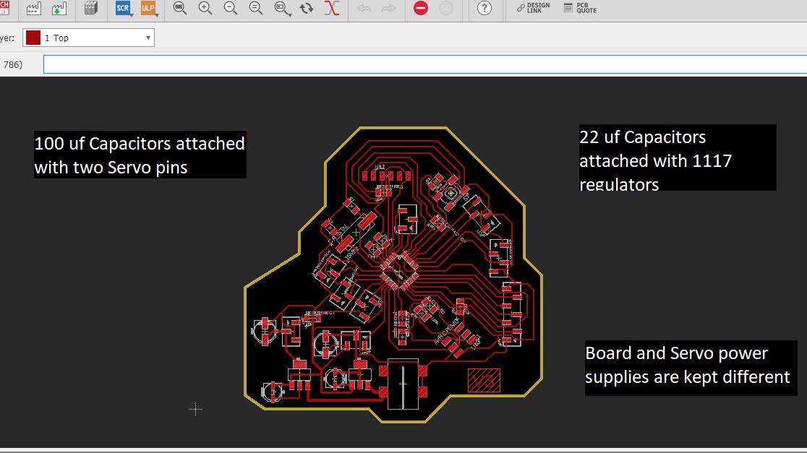
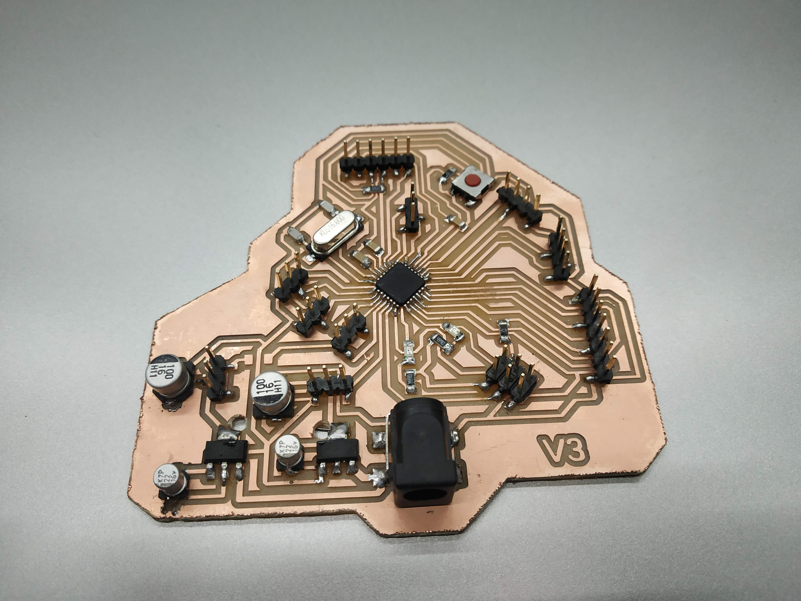
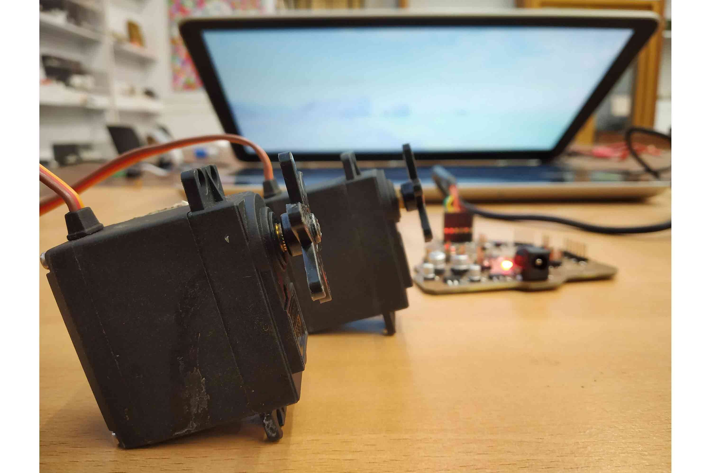
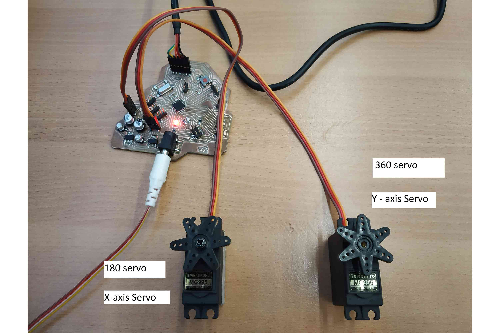

For Interface and Application programming week I wanted to use Processing and Arduino IDE. I am familiar with Arduino ide now, I have been using it since week 7, but Processign is new from, it Creates a small interface which can help users to get something from the Sensors in a visual way or can be used to give something like a command via the serial interface.
The Processing Interface and board communicate with each other with a serial interface. whichever command is given in processing will be converted into characters and sent to the board via serial port and the command will be executed.
I was experimenting with servos from week 11 and I am also thinking to use them in my final project. I wanted to give it try so I modified my final board. I changed Dc motor Drive to servo pins. I also wanted to check how much torque mg995 can give and what is its load-carrying capacity for my flapper mechanism.
Modification in board
In the modification of my board, I replaced the L293d dc motor driver with servo pins and capacitors. I am going to use Tower pro metal gear Mg995 servos. it s specifications and requirements are below :
Model : mg995
Operating Voltage : 4.8- 7.2v
Stall Torque @4.8V : 10 kg-cm //, break down torque, max torque
current : 1.5 amp
AS you can see above current drawn by the servos is very high relative to typical MCU (500 mA), it will burn my microcontroller if I directly connect it to the board, I could use a regulator but I to keep it separate, and the reason these servos need high capacitors with them is they need higher Voltage values when they are starting or changing positions at the instance, capacitors used as a quick supply of current and voltage for servos. usually, 470 uf capacitorsare preferred, but 100 uf is good enough.
 Code Explanation
Arduino code
//Arduino code:
#include <Servo.h> // include servo library
Servo yservo;
Servo xservo; // servos for x and y
//set initial values for x and y
int ypos = 0;
int xpos= 0;
void setup(){
xservo.attach(9); //for the x servo
yservo.attach(10); //for the y server
Serial.begin(19200); // 19200 is the rate of communication
Serial.println("Rolling"); // some output for debug purposes.
}
void loop() {
static int v = 0; // value to be sent to the servo (0-180)
if ( Serial.available()) {
char ch = Serial.read(); // read in a character from the serial port and assign to ch
// swith and case loops are used when there are number of possibilities and they cant be incluse in simple if else conditon loops
// in switch and cases all the contions are checked and if conditions are fullfilled it will execute corresponding statement
// if not it will just move to another one, if no condition is fullfilled then it will go to default statement
// break will simply break the loop or terminate the switch case and execute the statement .
switch(ch) { // switch based on the value of ch
case '0'...'9': // if it's numeric // if first later is numeric
v = v * 10 + ch - '0';
/*
so if the chars sent are 45x (turn x servo to 45 degs)..
v is the value we want to send to the servo and it is currently 0
The first char (ch) is 4 so
0*10 = 0 + 4 - 0 = 4;
Second char is 4;
4*10 = 40 + 5 = 45 - 0 = 45;
Third char is not a number(0-9) so we drop through...
*/
break;
case 'x': // if it's x
/*
....and land here
where we send the value of v which is now 45 to the x servo
and then reset v to 0
*/
xservo.write(v);
v = 0;
break;
case 'y': // if character is y
yservo.write(v);
v = 0;
break;
}
}
}
Processign Code
//Processing code:
import processing.serial.*; // processign serial library
int xpos=90; // set x servo's value to mid point (0-180);
int ypos=90; // and the same here
Serial port; // The serial port we will be using
void setup()
{
size(360, 360);
frameRate(100);
println(Serial.list()); // List COM-ports
//select second com-port from the list (COM3 for my device)
// You will want to change the [1] to select the correct device
// Remember the list starts at [0] for the first option.
port = new Serial(this, Serial.list()[0], 19200); // baud rate shoud be same
}
void draw()
{
fill(175); // these are style sheet comand for making interface
rect(0,0,360,360);
fill(255,0,0); //rgb value so RED // for x
rect(180, 175, mouseX-180, 10); //xpos, ypos, width, height
fill(0,255,0); // and GREEN // for y
rect(175, 180, 10, mouseY-180);
update(mouseX, mouseY); // tracks mouse position
}
void update(int x, int y)
{
//Calculate servo postion from mouseX
xpos= x/2;
ypos = y/2;
//Output the servo position ( from 0 to 180)
port.write(xpos+"x"); // position with the character
port.write(ypos+"y");
}
Final video
X axis servo to PWM pin 9
Y axis Servo Two PWM pin 10You can see in the video, by moving the x-axis servo will rotate accordingly, in 360 servos it will just change the direction of rotation when the slider comes to -y.  
Little bit fun with Karab
In Extra I had little bit fun with Avishek Das'sm final project KRAB
I use servo which takes the entire weight of the arm to know its capacity in weight lifting, weight newbie this was the only way I can confirm my what for servos, and the results are good, the servo was good enough to lift 3 mm flapper. see below
Group assignment was to compare tools which create different interface and applications, as I worked on the processing I helped to write things which I found good in processing. link.
Features I found good are
The week was Amazing! I enjoyed this week the most in all Electronics weeks.